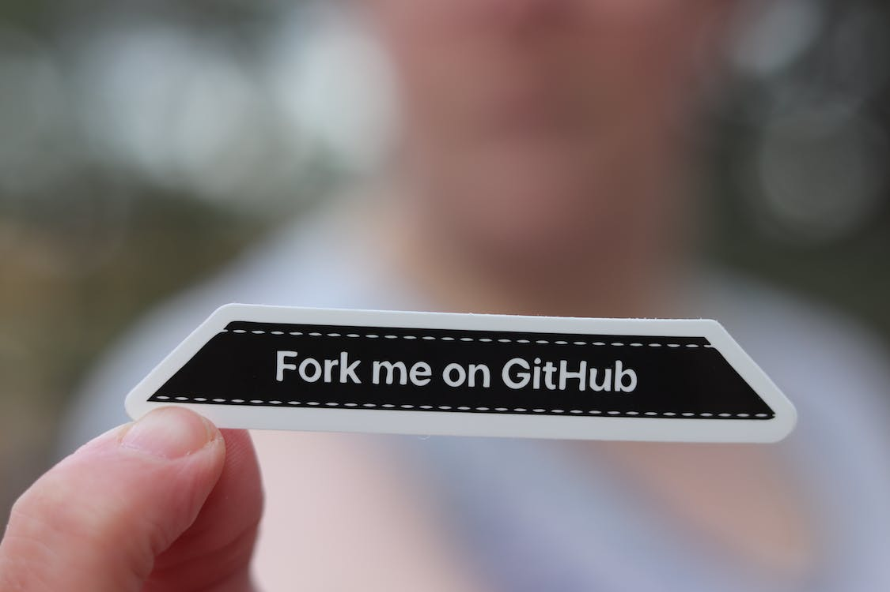

The Itches Behind the Counter
Chronic eczema victims gather round! Living with eczema can be painful and treating it can be worse. So many options but what works!? This timeline of my life shows my experiments with different eczema products and my latest endeavors in the span of a blog-post.
Tech Toks Podcast: Frank's Advice
Want to be rich and happy? Become a software engineer! Or at least this is what Frank Niu suggests. Frank Niu is a social media influencer who retired early into his life after working as a software developer for Netflix. He insists the strategy to success is simple: learn some code, job hop, and retire rich. Hear our perspectives as students looking to enter the tech industry about this seemingly perfect advice.
College Cooking: Rice Cooker Edition
Back as a freshmen in college, cooking for myself in the dorms was difficult. The only cooking tool I had on hand was my sturdy rice cooker. But as its name suggests, you can only make yourself rice... right? Well I had to get creative, and alongside a bowl of rice is an easy and delicious miso soup.

Personal Projects
If you haven't already seen the header of this website... I'm a computer science major! But from the rest of this website, there's nothing computer science related at all. But don't worry, my Github page has everything computer science related about me. Projects I'm currently working on, coding tutorials for new languages I'm interested in, really anything with code. Check it out as you clicked through the header thinking there was coding projects on here anyways.